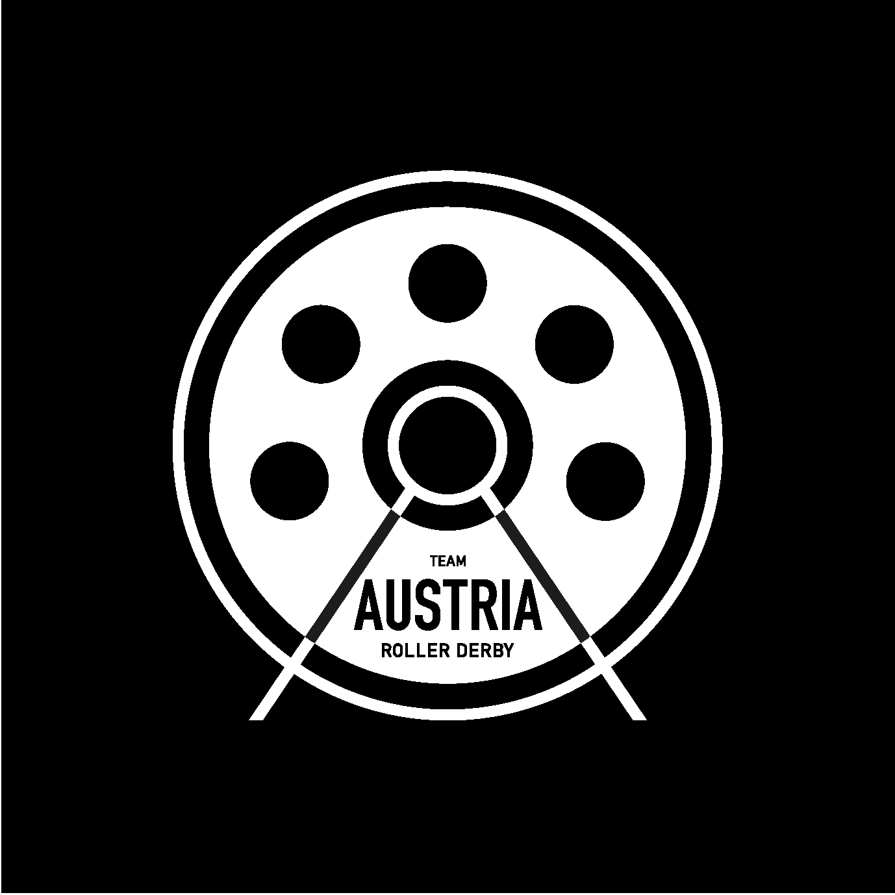
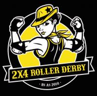
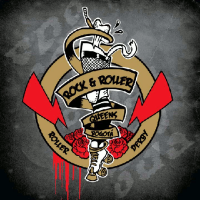
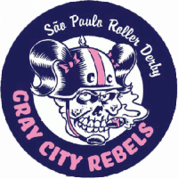
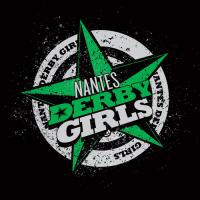
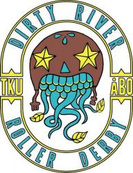

Non-US/Canadian Derby Roundup: 6th/7th May Edition
As is traditional, we’re bringing you another roundup of the upcoming Roller Derby this weekend from across the world. As always, we’re using Flat Track Stats for much of this information – for regions with less good coverage, we also do a bit of intensive searching using a tool which scans the Facebook events of Roller Derby leagues known to Derby Listing.
Predictions of bouts are from FTS, if possible, and from our own SRD Rank where FTS cannot make predictions (for example: Latin America, or non-MRDA men’s bouts). Our new SRD Rank is out – the first for this year, and now includes Junior leagues where possible, and a lot more Latin American leagues.
If we’ve missed you from our roundup, please let us know!
Scotland
The only bout we're aware of involving Scottish teams is down south in England...
UK
British Champs fixtures are back this weekend, after a break last week:
- Manchester sees the Tier 1 Men's triple-header, hosted by New Wheeled Order; seeing the hosts v South Wales Silures, Birmingham's Crash Test Brummies v Newcastle's Tyne & Fear, and Lincolnshire Rolling Thunder v Sheffield's The Inhuman League [FTS Tournament][EVENT]
- High Wycombe sees the Tier 2 South, with hosts Big Bucks High Rollers v Swansea City, and London Rockin' Rollers v Kent Roller Girls [FTS Tournament][EVENT]
- Guildford holds the Tier 3 East, as hosts Surrey Roller Girls play Bedfordshire's Rebellion Roller Derby and Chelmsford's Killa Hurtz take on Norwich's Norfolk Brawds[FTS Tournament][EVENT]
- Bristol sees the Tier 3 South hosted by Bath Roller Derby Girls, playing Newport's Riot City Ravens, and North Devon Roller Derby taking on Dorset Roller Girls [FTS Tournament][EVENT]
- and on Sunday, Ipswich, the Tier 2 Men's sees Suffolk Men's Roller Derby play London's Southern Discomfort B, and Bristol Men's play the Super Smash Brollers of Nottingham [FTS Tournament][EVENT]
Outside of Champs there’s also little we know about:
- Saturday: London Rollergirls host a very exciting double header as London C play Amsterdam [FTS], and London B play Team Scotland Roller Derby![EVENT]
- Meanwhile, London's Juke Boxx and Southern Discomfort's Ballistic Whistle, are in Newcastle to run a bootcamp [EVENT]
- Sunday: after their champs bout the say before, South Wales Silures host a coed/open to all day of scrims [EVENT]
Europe
In Europe, there’s rather a lot of derby, but all concentrated in a few places…
- On Friday: Tenerife sees Tenerife Roller Girls host Dublin Roller Derby [FTS][EVENT]
- Gothenburg, Sweden, Saturday sees the end of the Swedish National Elite tier, hosts Dock City taking on Stockholm's The Royal Army [FTS Tournament], as part of a double header with Royal Army B playing Dock City B [FTS][EVENT]
- Norrköping, Sweden sees Norrköping Roller Derby play Gothenburg B [FTS], and the Killer Apes from Outer Space (Norrköping Men's) play Gothenburg Salty Seamen[FTS][EVENT]
- Copenhagen, Denmark hosts a triple header, with Copenhagen Roller Derby A against Hamburg's Harbour Girls [FTS], Copenhagen B against Helsinki Roller Derby C [FTS], and Malmö's Crime City C also playing Helsinki C [FTS] [EVENT]
- Limerick, Ireland sees hosts Limerick Roller Derby against Lutece Destroyeuses all the way from France [FTS][EVENT]
- Eindhoven, Germany and hosts Rockcity Rollers play Roller Derby Metz [FTS][EVENT]
- Late Addition: the French Men's Championship Finals, Saturday through Monday, held in Toulouse! [FTS Tournament][EVENT]
Pacific
In Australia and New Zealand, it’s pretty busy, but with little on FTS:
- Auckland, New Zealand: Auckland Roller Girls v Wellington's Richter City [FTS][EVENT]
- Newcastle, Australia sees the start of the home season for Newcastle Roller Derby League, with home teams Fort Smashleys against Harbour Hellcats.[EVENT]
- Mansfield, QLD, Australia sees Gold Coast's Paradise City Roller Derby play host Northern Brisbane Rollers [FTS] [EVENT]
- Bateau Bay, NSW, Australia sees Outcast Derby host a "triple" event with no more details! [EVENT]
- Toowoomba, Australia, sees a double header with Toowoomba Juniors playing Ipswich Scare Force, and Toowoomba City Rollers A against Sun State Rollergirls [FTS] [EVENT]
- Timaru, New Zealand, finally, sees Timaru Roller Derby host Christchurch’s Otautahi Roller Derby [FTS][EVENT]
Latin America
In Latin America, it seems quite quiet…
- Buenos Aires, Argentina sees Wonderclan host their yearly "Autumn Fair". [EVENT]
- Lima, Peru and Toxic Lima host a home teams bout, with Terror de la Selva playing Furia Marina! [EVENT]
- Sunday, Colombia: Bogotá's 4th District Tournament returns, Central Derby DC Roller Derby hosting the usual triple header, Bogotá Bone Breakers B (Baby Breakers) playing Rock N Roller Queens B; Rock N Roller Queens A against Maquina del Mal Feminino; and in the men's tier, Légion Roller Quads versus Combativos [FTS Tournament][EVENT]
- Late addition: Sunday sees Avellaneda, Argentina's Desalmadas Roller Derby host Rotten Vicious Dolls (DFD B) [FTS] for a double header with an open subscription bout to follow. [EVENT]
Africa and Middle East
This section is quiet again.
Worldwide
Now we're in the "big Tournament" season, this section will hold events (in the USA) which are relevant to the World overall.- From Friday to Sunday, Eugene, Oregon sees The Big O 2017. Relevant to our interests are:
- Europe: Helsinki Roller Derby; Malmö, Sweden's Crime City Rollers
- Pacific: Sydney Assassins; Victorian Roller Derby League (A + B) and Victorian Vanguard (Men); New Zealand's Pirate City Rollers
- Latin America: Buenos Aires' 2x4 Roller Derby; Baja California, Mexico's Wheels of Mayhem
- [FTS Tournament][EVENT]
- Highlights: VRDL v Rose [decides our ongoing Dust Devil Cup holder], 2x4 v everyone, Wheels of Mayhem v everyone.
Team Austria: New to the World Cup
We've previously covered the first sets of new teams to appear before the 2018 World Cup in two articles - 5 of them in this roundup last year, and Team Iran here.
But there are even more teams arriving on the scene for what will be the largest World Cup ever... and we're catching up with the rest of them in this series.
Our first subject is a Nation which is surprising, perhaps, for its previous absence: Austria.

Whilst neighbouring Germany was one of the first European nations to gain Roller Derby leagues, and Team Germany having attended both previous World Cups, Derby in Austria has developed more slowly.
For many years, the capital Vienna was the site of the only league in the country, Vienna Roller Derby, founded in 2011 (as Vienna Rollergirls). Vienna, whilst an active league, was not even a WFTDA member at the time of the 2014 World Cup, and so a Team Austria simply wasn't on the cards then...
Team Austria's rep KnockOut Nora explains, "Even Vienna wasn't ready when the last World Cup came up (and it was 2014, its really such a long time ago already). And I think, no-one in Austria had even thought of the possibility of participating."
"Austria's just really slow when it comes to Derby, I think. Especially when you compare it to Germany, say, they have a Championship [the Bundesliga], there's 40 teams or more. Or if you compare it to France... In Austria, I think it's really quite a different situation, because we're just, even now, four teams."
Only much more recently, three more leagues, in Linz (to the North) in 2015; and Innsbruck (to the East) and Graz (to the South), in 2016, have formed, but the Roller Derby scene in Austria is very much still developing. As with the Czech Republic, Poland and further East, it seems like it's more difficult to sell the game in Central and Eastern Europe.
This is a problem which Nora has also been thinking about: "Yeah, actually, I really don't know what it is - I started derby in the Netherlands originally, I skated there for 3 months, and, especially if I compare it to the Netherlands; there's also so many teams there, I think they're better connected; the people were so much more willing to travel, and everything was just closer. "
"But I think in general, Austria might be a little slow with new things, and especially when it comes to derby, I mean, a sport for women and then people are kind of suspicious because there's no balls involved(!). I wish it were different! But I think things are really starting to change now - with the three newer teams, they're really really motivated, and I mean there's been so many [new] girls within the last one and a half years, so I think it's also maybe changing at the moment with Derby in Austria."
"And I also see the World Cup, participation in the World Cup, as maybe a turning point ... to also make it more 'official' in Austria maybe. Because it's also something that people know, and that they can relate to a World Cup - it makes our sport sound more Official to some people."
"If I compare it to Vienna: the team is going on for more than 5 years now, we fill out every game, we have a huge fan crowd and we have an A and B team, Fearleaders, it's quite a thing already... and it's still really hard to get funding, and to get venues which are not city owned. And perhaps with National teams this will change, and they'll take it more seriously, and think 'this is a real sport, they play it in other nations, and other cities'... and I think that this is also what this Team means to me, actually, that it might create visibility for Roller Derby in Austria."
Especially with this World Cup projected to be the biggest yet, with (not yet confirmed) comfortably more teams attending than the 2014 World Cup, itself large with 30. It's hard to discount the relevance of a sporting event with quite so many nations involved...
"Yeah, it's a big thing, and that's also something you can tell the people when you're applying for funding - this is really happening, it's a real thing, there's 40 nations coming, and it creates a little bit more seriousness to the sport then."
To take part can also be a difficult thing in itself. The announcement that the 2018 Roller Derby World Cup would be held in Manchester was a catalyst for the formation of Team Austria. Whilst there was a chance that the Cup would be held far away for a third time running, there was no point in trying to form the team - why recruit if you won't be able to afford to travel?
"As soon as the decision was made that it would be in Manchester, I think this is the point where the people involved in planning - 12 people - we all knew that we could really make it happen.. and then we started to plan for real.
Before then, it was always more like 'let's see what happens', because I think many people wouldn't have been able to afford flying to Australia, or South Africa, or South America... or anywhere except Europe! It would have been quite a financial disaster for most of my team!"
Team Austria have yet to hold their tryouts, and are hoping that when they do, they will be able to represent all of Austria, and Austrians outside the country as well.
"So, the thing is we haven't had our tryouts yet. The tryouts will take place in June - we are still looking for Skaters. Everything is still quite vague, we're 10-12 people who are planning in Vienna, and we're at the moment organising everything connected to the National Team. It's only Vienna skaters at the moment - the other leagues are busy with hosting their first bouts. We really hope that all of the leagues in Austria will be involved in the planning in the next few months."
"We will have two skaters from Munich coming to assess, along with our bench coach. We'll have a practice roster soon after tryouts, I think mid-of-July or something like that, and then the idea is that we practice together once a month until October/November, and then we will have our final roster cuts to 20 skaters."
As with a lot of teams, especially this time around, the training team serves a dual purpose, and one which will hopefully benefit the newer teams contributing skaters.
"The training roster is also to make it more inclusive, and to give people the chance to practice together, and to learn, and to really make the National Team a chance to help roller derby grow. And because, in Austria, the levels of the teams are actually still quite different, just because of age."
This kind of "community growth" effect from National Teams is perhaps one of the more socially important aspects of National organisation - and one which doesn't get as much press as it might do.
"The people that are working on it now have been doing so since the announcement in December. But long before that, I've been to several EROC conferences, in 2013, and 2014, and since then I've been involved with other people from other national teams, and with the Roller Derby Nations Committee (for which I am the Austrian representative). So, I've been involved in that way, but the real planning part began in December, and I think for many people it got more real - we said, we have to decide right now, do we want this, because we don't have a lot of time, so we have to do this right now, or never."
With Team Austria one of the newest teams at the World Cup, its aims are a naturally different from those nations turning for a third time.
"I haven't actually thought about it [pauses]. It's not that easy - I can only speak for myself, but I think for many people it's the idea of having a National Team. Everyone I know who's into Derby watched the World Cup, and it's so fascinating to see all these people play.
And I think that many people, were then like 'ahh, I wish I could be there as well'."
"So I think the biggest motivation is to just actually be there for the first time, and also of course to play great games as a team which has grown within the last months of training. And maybe also to prove to ourselves, that while it took us a while to show up, that we did get there!"
Not, of course, that Austria will be content to simply 'participate' once they've arrived...
"For us, judging from the people I know that applied, for the tryouts already, they are rather competitive, so I think once they are there, they will also want to win! We’re not sure what the final tournament will look like, but we’ll definitely be there to show Austria off well."
"But also I think that we will have quite some fans coming - also because it is in Europe, it will be so much easier for friends and fans to come along!"
"I think that this also helps Derby grow in Europe as a whole - to have fans travel there. Sport is so much about fan culture as well, and this might also grow and become a bigger, more cohesive thing because people can actually go and see the World Cup."
"Not in a far away place, where you can still stream it, but it's not the same as being there, it's still kind of unreal."
Team Austria will be making things more real from their tryouts in July. You can find out more about Team Austria, and how to apply for those tryouts, at their Facebook page here:
Non-US/Canadian Derby Roundup: 29th/30th April Edition
As is traditional, we’re bringing you another roundup of the upcoming Roller Derby this weekend from across the world. As always, we’re using Flat Track Stats for much of this information – for regions with less good coverage, we also do a bit of intensive searching using a tool which scans the Facebook events of Roller Derby leagues known to Derby Listing.
Predictions of bouts are from FTS, if possible, and from our own SRD Rank where FTS cannot make predictions (for example: Latin America, or non-MRDA men’s bouts). Our new SRD Rank is out – the first for this year, and now includes Junior leagues where possible, and a lot more Latin American leagues.
If we’ve missed you from our roundup, please let us know!
Scotland
Unusually for an update here recently, the Scottish derby action is entirely in Scotland this weekend:
- Hosted by ShepSk8, Dundee Roller Girls B (the Bonnie Colliders) play Manchester's Arcadia Roller Derby [FTS][EVENT]
- Quadzilla, who will also be attending ShepSk8 for non-derby skating sessions, is also making use of his time in Scotland hosting Roller Derby bootcamps/training sessions in:
UK
Unusually, there are no British Champs fixtures this weekend.
Outside of Champs there's also little we know about:
- London sees London Rockin' Rollers host a double header: LRR B versus North Devon Roller Derby [FTS] followed by the LRR Wreckin Rollers rookie team in an exhibition bout. [EVENT]
- Birmingham sees Central City Rollergirls' "ANIMEzing Roller Derby Tournament", for B/C level skaters. All exhibition teams, so no FTS. [EVENT]
- And in Cardiff, Team Wales are playing the Vagine Regime. [EVENT]
Europe
In Europe, there’s rather a lot of derby, but all concentrated in a few places…
- Hannover hosts the German Bundesliga, tier 2, with hosts Demolition Derby Dolls playing Barockcity [FTS Tournament][EVENT]
- Nörrkoping, Sweden hosts the last games of the Swedish Seriespel (Elite Tier); hosts versus Crime City (Malmö), Luleå versus Gothenburg [FTS Tournament][EVENT]
- Kallio, Finland sees the "Farewell to Forearms" tournament, a two tier tournament with Paris A, Auld Reekie A and Kallio A in Tier 1, and Paris B, Helsinki B and Kallio B in Tier 2. [FTS Tournament][EVENT]
- Rennes, France sees the "Spring Rolls" tournament, featuring Rennes' Vilaines, the Sabordeuses of Brest, Bordeaux' Compagnie Cruelle, and the Filles de Neptune of Nantes in a full tournament over two days. [FTS Tournament][EVENT]
- Namur, Belgium is the host for Namur Roller Girls' 6th Birthday extravangaza, with
- Porto, Portugal, sees Roller Derby Porto host a triple-header round-robin against Roller Derby Madrid and London Rollergirls C [FTS 1,2,3][EVENT]
- Lille, France, sees Roller Derby Lille host a triple-header, with Switchblade vSaint-Gratien's Panthers Graou [FTS], Lille B v Panthers Miaou [FTS], and men's Les Barbiers de Sévices vs Rouen's Croque-Morts [FTS] [EVENT]
- In Mannheim, Germany, the Delta Quads are hosting Prague City Roller Derby [FTS][EVENT]
- Luxembourg sees a double header hosted by Roller Derby Luxembourg (with no Facebook event we can see, just an afterparty); the hosts playing Reaper's Crew of Épinal, France [FTS], and a men's game, with exhibition team Rock'Est versus Mons'ter Munch (Mons) [FTS]
- Gothenburg, Sweden, sees a men's bout as Gothenburg Salty Seamen host the Crash Test Brummies of Birmingham, UK [FTS][EVENT]
- Kouvola, Finland sees Kouvola Rock n Rollers play Tampere B in a closed bout [FTS]
- Sunday, Lyon, France sees Lyon Roller Derby host a double header, Lyon B (Gones’N’Roses) play Roller Derby Valence B [FTS] and Men's team Mon Cherrry play Paris' Panam Squad B [FTS][EVENT]
Pacific
In Australia and New Zealand, it’s pretty busy, but with little on FTS:
- Canberra, Australia sees Canberra Roller Derby Leagues' home season continue with Brindabelters versus Black 'n' Blue Belles [EVENT]
- Liverpool, Australia sees South Side Derby Dolls host Round 2 of the 5x5 Roller Derby Championship, with Varsity vs Central Coast and Sydney vs Newcastle (A tier); Hawkesbury vs Blue Mountains and South Side vs Inner West (B tier) [FTS tournament][EVENT]
- Mackay, Australia sees Mackay City Roller Maidens host the 3 day Great Barrier Grief tournament, featuring (as well as the hosts), two mixed/exhibition teams (North Australian Roller Derby, Rural And Widespread Rollers [winners of cutest logo ever]), the Top Gun Rollers of North Queensland, Rum City Roller Dolls of Bundaberg, Rocky Roller Derby of Rockhampton, and an open subscription "Pot luck" team. (FTS entries in progress as we work through things) [FTS tournament] [EVENT]
- Campbelltown, Australia sees the start of Murder City Roller Girls' home season, with debuting team, the Slamazons playing MCRG's oldest home team, Dames of Hazard [EVENT]
- Nelson Bay, New Zealand sees the Sirens of Smash host an intraleague, with Breaking Bad vs Sons of Anarchy themed teams [EVENT]
- Sunday, Coffs Harbour, New South Wales: Coffs Coast Derby Dolls host an open scrimmage for junior skaters. [EVENT]
- Sunday, Albany, Australia sees Albany Roller Derby League host a black and white scrimmage to celebrate their 3rd birthday [EVENT]
Latin America
In Latin America, it seems quite quiet...
- São Paulo, Brazil, sees Ladies of Helltown host a party to celebrate their 8th Birthday! [EVENT]
- Curtiba, Brazil, sees the Blue Jay Rollers hosted an open day for potential rookies [EVENT]
- Sunday, São Paulo: men's team, the Thunder Rats Derby Squad are hosting a fundraiser of "open icecream" to raise funds to attend the Twisted and Mixed tournament we mentioned last week. [EVENT]
- Sunday; Berazategui, Buenos Aires, Argentina sees Kamikazes Roller Derby host the only actual derby we know about: a triple-header round robin versus Desalmadas (Avellaneda) and Fawkes (Merlo, Buenos Aires) [FTS 1,2,3][EVENT]
Africa and Middle East
This section is quiet again.
Other Events
Our semi-regular “other events” section highlights things further in the future you might want to keep an eye on.
Coming up in May, there's the usual invitational tournaments, and, whilst they get a lot of attention anyway, we're mentioning The Big O 2017 (Eugene, Oregon) this once, as they have their first Latin American guests in 2x4 Roller Derby this year.
- May 5 – The Big O https://www.facebook.com/events/1356059051113408/
Non-US/Canadian Derby Roundup: 22nd/23rd April Edition
As is traditional, we’re bringing you another roundup of the upcoming Roller Derby this weekend from across the world. As always, we’re using Flat Track Stats for much of this information – for regions with less good coverage, we also do a bit of intensive searching using a tool which scans the Facebook events of Roller Derby leagues known to Derby Listing.
Predictions of bouts are from FTS, if possible, and from our own SRD Rank where FTS cannot make predictions (for example: Latin America, or non-MRDA men’s bouts). Our new SRD Rank is out – the first for this year, and now includes Junior leagues where possible, and a lot more Latin American leagues.
If we’ve missed you from our roundup, please let us know!
Scotland
Unusually for an update here recently, the Scottish derby action is entirely in Scotland this weekend:
- British Champs Tier 3 North comes to Aberdeen, Granite City Roller Derby host Auld Reekie Roller Girls B, and also Furness Firecrackers versus Halifax Brusin' Banditas [FTS Tournament][EVENT]
- And before that, Friday brings another of Dundee Roller Girls' "Learning" Scrims - an open subscription scrim hosted by Dundee, intended to encourage skill development. This particular edition is targeted particularly at Officials - from Referees through all kinds of NSOing. [EVENT]
UK
As will be the case for the next few months, much of the bouts in the UK are part of British Champs:
- As well as the above, the Tier 2 North is also on, hosted by Newcastle Roller Girls B, the Whippin Hinnies, as they face Manchester Roller Derby, and host Liverpool Roller Birds against Wirral Roller Derby [FTS Tournament][EVENT]
- and on Sunday, Cheltenham hosts the Tier 4 South, with hosts Severn Roller Torrent facing Hereford Roller Girls, and hosting Plymouth versus Neath Port Talbot [FTS Tournament][EVENT]
Outside of Champs:
- In Manchester, the very first WFTDA World Summit sees Rainy City Roller Derby host the World in an event focusing on Media, Emerging Nations and Advocacy, and also including a Public Scrimmage, Announcer and Officiating Clinics, and the first chance to see Team England on track as they play themselves Red versus White. [EVENT]
- In Nottingham, One very special event, as the Louisey Rider Cup returns for a second year of all-day Coed-Tournament-Action in honour of Louisey Rider, and raising money for the road-safety charity "Break" [EVENT]
- In Cambridge, there's a double-header, as Cambridge Rollerbillies A face Portsmouth Roller Wenches A... [FTS] and then Cambe B play Portsmouth B[FTS][EVENT]
- and a special shoutout to Birmingham Blitz Dames, who are across in New York State for the Siege of Central New York tournament, hosted by Central NY Roller Derby. The Blitz Dames are competing in the Sanctioned (A) tier of the tournament.[FTS Tournament][EVENT]
Europe
In Europe, there’s rather a lot of derby, but all concentrated in a few places…
- the French National Championships continue, with Division 2 hosted by Roller Derby Caen, with Le Man's Roller Derby 72, Brest's BMO Roller Derby Girls, CPR Lorient and Anjou Derby Girls competing [FTS Tournament] [EVENT]
- and more French Nationale Division 2 is hosted in Pontarlier by the Molly Hatchets, as La Bande à ta Mère of Lyon, Clermont-Ferrand's Auverniak's, Macon's Bananas Clit, Thonon Les Bains' biches and the Grrriottes Girrrls of Lyon all compete [FTS Tournament][EVENT]
- The German national Bundesliga also continues this weekend, with Bembel Town (Frankfurt) hosting a double header - Riot Rollers Darmstadt versus a mixed team, and a Division 2 Bundesliga bout between the hosts Bembel Town and the Zombie Rollergirlz of Münster [FTS][EVENT]
- and a Division 1 Bundesliga event in Cologne, as Cologne Roller Derby take on Bear City Roller Derby [FTS][EVENT]
- In Uppsala, Sweden, the National Seriespel Division 1 completes, with Jackdaw City Rollers hosting the final games on the Saturday, Umeå vs Örebro and Jackdaw City vs Stockholm B [FTS Tournament], followed by a Sunday of short-format games for Gothenburg B, a Karlstad/Sundsvall mixed team, Linköping, Norrköping, Stockholm C, and Uppsala B! [EVENT]
- Outside of national tournaments, on Sunday, Quaregnon, Belgium sees Manneken Beasts host "240 minutes of Beasts and Mon'sters", as they play Manchester's New Wheeled Order (twice) [FTS 1,2], whilst Mons' Mons'ter Munch play the Unnamed Basterds [FTS] and women's team the Freaky Mons'ter Ladies take on the Cuberdonnas (Gent B) [FTS] [EVENT]
- In Zürich, Switzerland, Saturday, Zürich City Rollergirlz host Toulouse B, the Blocka Nostra [FTS][EVENT]
- Hamburg, Germany, sees Harbor Girls Hamburg host a double header: Hamburg B playing Arnhem [FTS], whilst the A team take on the Quads de Paris [FTS][EVENT]
- and Stuttgart sees Stuttgart Valley Rollergirlz host Strasbourg [FTS][EVENT]
- In Bergen, Norway, Wet City Rollers host a triple-header round robin with Aalborg's Combat Bullies[FTS] and the Broilers (a fusion of Stavanger's Oil City, and Bodø Roller Derby)[EVENT]
- In Warsaw, Poland, Warsaw Hellcats are playing the Hard Breaking Dolls of Prague[FTS][EVENT]
- and in Bilbao, Spain, Bilbo Roller Derby are hosting a triple-header round robin against Murcia's Rock 'n' Roller Derby, and Las Palmas [FTS 1, 2, 3][EVENT]
- Finally, Dublin Roller Derby are holding their Bootcamp, with a "coed challenge game" to close [EVENT]
Pacific
In Australia and New Zealand, it's pretty busy, as
- In Whakatāne, the New Zealand Top 10 national tournament continues, with a triple header, hosts Whakatāne Roller Derby League versus Wellington's Richter City and Bay City Rollers of Hawke's Bay, in a round-robin [FTS Tournament][EVENT]
- Tasmania sees the Tiger Town Takedown, hosted by Convict City Roller Derby League, and featuring Perth Roller Derby, Canberra Roller Derby League,South Island Sirens Roller Derby League, Melbourne Northside Rollers,South Sea Roller Derby and Devil State Derby League in a tournament still under development [EVENT]
- and MRDA comes to Sydney, Australia, with MRDA Down Under, Australia's first MRDA-Sanctioned tournament, hosted by Sydney City SMASH, and featuring ThunderQuads Roller Derby Masculino (from Argentina), Victoria Men's Roller Derby,The Scartel from Brisbane and Capital Carnage from Canberra![FTS Tournament] [EVENT]
- Darwin Roller Girls are hosting a home teams game, Arafuries vs Psyclones [EVENT]
- and a special mention of Hobart Junior Roller Derby who are recruiting on the Friday [EVENT]
Latin America
In Latin America…:
- Bogotá, Colombia's 4to Distrital Tournament continues, with Maquina Del Mal Feminino hosting Combativas Revoltosas versus Rock'n Roller Queens, Fugitivas RollerPunk versus Central Derby DC, and in the men's tier, Kings versus Combativos [FTS Tournament][EVENT]
- in Mendoza, Argentina, Lado Oscuro are taking on "The Galaxy", an open subscription team you can sign up to here. [EVENT]
- in Blumenau, Brazil, the Iron Ladies are hosting an all day event, with 2 full length bouts (hosts v Blue Jays (Curitiba) [FTS] and Blue Jays v "IronMachine" (a mashup of the hosts and MeatMachine of Campo Grande)), as well as mixed 10 minute round games and rookie events. [EVENT]
- In Celaya, Mexico, Roller Derby Celaya play Ovejas Negras (the Black Eggs) of Michoacán [FTS][EVENT]
- And in Mexico City, the Atomicas host Mexico City Roller Derby B, the Quadtlicues [FTS] [EVENT]
Africa and Middle East
After last weekend's historic bout, this section is quiet again.
Other Events
Our semi-regular “other events” section highlights things further in the future you might want to keep an eye on.
Coming up in May, there’s more bootcamps, as Juke Boxx and Ballistic Whistle host one in Newcastle:
- May 6 - Coed Bootcamp, Newcastle (Juke Boxx and Ballistic Whistle) https://www.facebook.com/events/1345273672162823/
and looking ahead a bit further - if you were impressed by the performance of Nordic Roller Derby at Anarchy last weekend, you can see even more in June as Kallio host the FINvitational two-day tournament:
- June 2 - FINvitational (Kallio, Helsinki) https://www.facebook.com/events/1779647188719483/
Torneo Violentango: The Teams
Just as we did for Nantes' West Track Story last weekend, we thought it was only proper to do a quick rundown of the teams at 2x4 Roller Derby's WFTDA Recognised Tournament: Violentango 5.
As many of these teams are pretty new to WFTDA, they have no WFTDA Rank - most of them are playing a large number of WFTDA Strength Factor Challenges [a special kind of pseudo-Sanctioned bout which counts only towards the "new" teams' rating with WFTDA] in order to fix this. Buenos Aires Roller Derby is not a WFTDA member at all, and so does not have a WFTDA Rank. The advantage of Strength Factor Challenges is that they do not reduce the ranking of the "experienced" team - so all of 2x4's games at Violentango 5 are SFCs.
A full schedule, with time-zone adjustments and links to streams when available, is hosted on our site here: https://aoanla.pythonanywhere.com/violentango5.html (a smaller article on the tournament is HERE. )
2x4 Roller Derby
2x4 are the first WFTDA member league in Argentina. Founded in Buenos Aires, Argentina in 2010, they joined WFTDA fully at the start of 2016, at the beginning of the current trend.
2x4 has organised Violentango tournaments for the last 5 years, although this is the first WFTDA Recognised Tournament version. (We've written a little about the history HERE.)
As well as their A Team, Team OSOM, 2x4 also maintains a B Team (Las Pibas) and a C Team. After Violentango, Team OSOM are preparing for attending someone else's tournament, as they feature at The Big O, in Eugene, Oregon.
2x4 are rated #43 by WFTDA, #94 by SRD Rank (World, all gender) and #32 by Flat Track Stats (WFTDA) [New SRD Rank - #111]
Sailor City Rollers
The second team at Violentango based in Buenos Aires, Sailor City Rollers were founded in 2011, and (as is a theme) joined WFTDA fully in 2016.
Sailor City also have A, B and C teams, all of whom are active around Argentina and beyond. Most recently, Sailor City played 2x4 only a month ago, losing by around 70 points - they will be wanting to show that this was a fluke, given much closer games in the past (and a win at Violentango 4!).
Sailor City Rollers will also be at the WFTDA World Summit hosted by Rainy City Roller Derby on the 21st to 23rd April, as a "Scholarship league" selected to attend.
Sailor City are not rated by WFTDA, #87 by SRD Rank (World, all gender) and not rated by Flat Track Stats (WFTDA) [New SRD Rank - #138]
Buenos Aires Roller Derby
Buenos Aires Roller Derby, or B.A.R.D., is the third Buenos Aires based league at Buenos Aires. B.A.R.D. has a rather complex history, re-formed as the merger of the Cougar Rollers and Black Mambas in 2015; it could also be said to date back to the formation of the original teams in 2010!
B.A.R.D. have A, B and C teams, all of whom are active participants in the Latin American (especially Argentine) derby community. Of the teams at Violentango, B.A.R.D played Sailor City and Bx3 at the Third Latin American Tournament, losing to both.
B.A.R.D. are not rated by WFTDA, #248 by SRD Rank (World, all gender) and not rated by Flat Track Stats (WFTDA) [New SRD Rank - #417]
Bogotá Bone Breakers
The first of two teams from Colombia, Bogotá Bone Breakers were founded in 2009, but only became full WFTDA members in 2016.
Bx3 participate in the yearly Bogotá district tournament, which is also ongoing at the moment, along with the large number of other leagues in Bogotá. (Hosting of fixtures is shared amongst all participants.) Bx3's B team, the Baby Breakers, also play in the Distrital, as well as playing the lower rated teams in Colombia. At the Third Latin American Tournament, BX3 played Metropolitan (a loss by 1 pt), and took convincing wins against Ladies of Helltown and B.A.R.D.. They took a significant 670+ pt win over R'nRQueens B ("Queens") in the Distrital...
Bx3 are not rated by WFTDA, #175 by SRD Rank (World, all gender) and not rated by Flat Track Stats (WFTDA) [New SRD Rank - #237]
Rock'n Roller Queens
The second of the Bogotá, Colombia teams, Rock'n Roller Queens date from 2009, and are one of the earliest WFTDA members in this tournament, having been full members since 2013. (In fact, they are the first WFTDA member in Latin America.)
R'n R Queens have been very active in the development of Roller Derby in Colombia, having essentially gotten all of the "firsts" - the first bootcamp in 2011, the first tournament in 2012, and the first World Cup Qualifier in 2013. They are now active members of the Bogotá based "Distrital Torneo", as are Bogotá Bonebreakers above, along with their B-team (known simply as "Queens"), and brother-league, "Kings".
R'n R Queens are #177 by WFTDA, #289 by SRD Rank (World, all gender) and not rated by Flat Track Stats (WFTDA) [New SRD Rank - #341]
Metropolitan Roller Derby
Santiago, Chile's Metropolitan Roller Derby are the only Chilean team at Violentango. In common with several teams here, they only became WFTDA members in 2016.
Metropolitan attend a large number of the tournaments organised in Latin America, as do their B-Team, the Bayonetas. (Most recently, the Bayonetas could be found at the Quad Wars tournament, competing with teams across the continent.) In the last year, Metropolitan have played BX3 (winning by 1 point!), and Sailor City (winning by more) at the Third Latin American Tournament.
Metropolitan are not rated by WFTDA, #125 by SRD Rank (World, all gender) and not rated by Flat Track Stats (WFTDA) [New SRD Rank - #161]
Ladies of Helltown

From São Paulo, Brasil, Ladies of Hell Town were founded back in 2009, but only joined WFTDA fully near the end of 2016.
As the first league to be founded in Brasil, the Ladies of Helltown have driven the development of roller derby in the country. (Back in 2011, they arranged for Bonnie D Stroir to hold a bootcamp in São Paulo, and it has grown since then...) They have recently won the 2016 Brasilian Championship, and acquired their own permanent venue for 2017.
Ladies of Helltown are not rated by WFTDA, #931 by SRD Rank (World, all gender) and not rated by Flat Track Stats (WFTDA) [New SRD Rank - #1008]
Gray City Rebels
Also from São Paulo, Brasil, Gray City Rebels were founded in 2010, joining WFTDA fully only near the end of 2016. (The league like to note that, whilst they were the second league in São Paulo, after the Ladies of Helltown, they managed to be first to join WFTDA, if only by a few months.)
Gray City's travel team, The Humming, compete widely in the tournaments across Latin America. (Most recently, The Humming competed against Rio de Janeiro' Sugar Loathe - with a 206-64 victory, and "the rest of the World", a challenge team.)
Gray City Rebels are not rated by WFTDA, not rated by SRD Rank (World, all gender) and not rated by Flat Track Stats (WFTDA) [New SRD Rank - not rated]
Non-US/Canadian Derby Roundup: 15th/16th April Edition
As is traditional, we’re bringing you another roundup of the upcoming Roller Derby this weekend from across the world. As always, we’re using Flat Track Stats for much of this information – for regions with less good coverage, we also do a bit of intensive searching using a tool which scans the Facebook events of Roller Derby leagues known to Derby Listing.
Predictions of bouts are from FTS, if possible, and from our own SRD Rank where FTS cannot make predictions (for example: Latin America, or non-MRDA men’s bouts). Our new SRD Rank is out – the first for this year, and now includes Junior leagues where possible, and a lot more Latin American leagues.
If we’ve missed you from our roundup, please let us know!
Scotland
Whilst three Scottish leagues are playing away this weekend, there's still derby in Scotland itself:
- On Sunday, Perth sees Fair City Rollers return to play their first public bout in several years, against first-time-bouting Helgin Roller Derby (of Elgin). [FTS][EVENT]
UK
As will be the case for the next few months, much of the bouts in the UK are part of British Champs:
- Sunday sees Dublin, Ireland (yes, we know, but we're covering British Champs in the UK section) see the next fixtures in the Tier 3 Men's North, hosts Men Behaving Derby playing Falkirk's Bairn City Rollers' Skelpies; Teeside Skate Invaders also play Glasgow Men's Roller Derby [FTS Tournament][EVENT]
Outside of Champs:
- London sees the return of Anarchy in the UK (6), as London Rollergirls invite the top 5 WFTDA teams in Europe (Rainy City Roller Derby, Helsinki Roller Derby, Crime City Rollers, Stockholm Roller Derby and London themselves) to compete in Sanctioned bouts. [FTS Tournament][EVENT] (FTS favours London, but there's some closely matched teams in the rest of the field...)
- Blackpool Roller Derby, after playing ARRG C last weekend, this time host Glasgow Roller Derby B down in Blackpool [FTS], as a double header withThe Northern Rogues vs North Wales ZomBs [EVENT] (FTS favours the visitors)
- Manchester Roller Derby are hosting a co-ed bout, with their "Furious Engine" against The World [EVENT]
- Manchester also sees New Wheeled Order host Wirral Pack Animals in a closed door bout [FTS] (FTS can't predict this - but SRDRank favours NWO.)
Europe
In Europe, there’s rather a lot of derby, but all concentrated in a few places...
- the French National Championships continue, with Division 2 hosted by Roller Derby Toulouse , with Castres Roller Derby, Roller Derby Tarbes, SAM Roller Derby, Toulouse B,Roller Derby Pibrac, and Roller Derby La Rochelle all competing[FTS][EVENT]
- Metz, France sees the second big French tournament in as many weekends, as Roller Derby Metz Club host Fantastic 8 - a three day tournament featuring the hosts, Croydon Roller Derby, Roller Derby Dresden, Hell's Ass Derby Girls Strasbourg, Sheffield Steel Roller Girls, Dom City Dolls, Munich Rolling Rebels, and Rotterdam Roller Derby [FTS Tournament][EVENT] (FTS favours Croydon, Sheffield and Dresden)
- and up in northern Finland, the last bouts in this season of the Pohjola Cup are played, with hosts Oulu playing St Petersburg's White Night Furies, Jyväskylä playing Riverdale, and the White Night Furies playing Roll-On. [FTS Tournament][EVENT]
- Outside of the big tournaments, The Hague, Netherlands sees The Parliament of Pain host Go-Go Gent Roller Derby B (the Cubs) [FTS][EVENT] (The hosts have the advantage, according to FTS)
Pacific
In Australia and New Zealand, it looks a bit quiet:
- In Albany, Western Australia, Albany Roller Derby have their only fresh meat recruitment of the year [EVENT]
- In Mount Maunganui, New Zealand, Mount Militia Derby Crew host a sponsored car wash event.[EVENT]
Latin America
In Latin America... there's one very large event happening:
- From Thursday through Sunday, Buenos Aires, Argentina sees the first ever WFTDA Recognised Tournament in Latin America, as 2x4 Roller Derby presents the 5th Violentango. With fellow Latin American WFTDA leagues, Sailor City Rollers, Metropolitan Roller Derby, Gray City Rebels, Ladies of Helltown, Rock'N Roller Queens and Bogotá Bone Breakers; and nonWFTDA Buenos Aires Roller Derby (B.A.R.D.), the event will be a mix of SFC, Sanctioned and unsanctioned bouts, and include a bootcamp and a WFTDA Officiating Clinic! We have a schedule available for the event here [SCHEDULE], which also links to our other writing on it.[FTS Tournament][EVENT] (FTS can't predict this - SRD Rank favours Sailor City Rollers and hosts 2x4, depending on the strength of home team advantage.)
- Also: MDQueens host another "open skater intake" on Saturday.[EVENT]
Africa and Middle East
Excitingly, we get to add another section to this update, as...
- Cairo, Egypt sees the CaiRollers host their second bout ever (and their first "international") as they welcome the Marseille Bloody Skulls over to play. [FTS][EVENT]
Other Events
Our semi-regular “other events” section highlights things further in the future you might want to keep an eye on.
Coming up in May, there's more Latin American Roller Derby, as Brasil's Twisted And Mixed Roller Derby returns for its 3rd edition, promoting Roller Derby development across the Brasilian leagues.
- 6 May – Twisted and Mixed https://www.facebook.com/pg/twistedandmixedrd/
Closer to home for us, Team England Roller Derby are running a "Train Like England" bootcamp, with both Blocker and Jammer specialisations on May 13th.
- 13 May - Train Like England https://www.facebook.com/events/371814833198725/permalink/391062467940628/
West Track Story: The Teams
With Nantes Derby Girls' 5th edition of West Track Story coming up this weekend, we thought we'd make you a little guide to the teams competing in this WFTDA Recognised Tournament.
As the tournament is WFTDA Recognised, each bout will be Sanctioned, contributing to the teams' ranking for the important "Playoffs" rankings which decide which Division you make, if any.
As the tournament is WFTDA Recognised, WFTDA.TV is re-streaming the video - if you'd like to check the schedule in your timezone, we have a viewing guide here: https://aoanla.pythonanywhere.com/westtrackstory2017.html
Nantes Derby Girls
Hosts Nantes are one of the stronger teams in Europe - ranked 24th by Flat Track Stats. Founded in September 2010, Nantes became a member of the the FFRS (the French Roller Sports Governing Body) in 2012, and a WFTDA Apprentice in 2013, with full WFTDA membership the usual year later. Nantes have been running West Track Story since 2013, when it had just 4 teams attending; it soon grew to a 5 team event, with WFTDA "Official" status coming in 2016 for West Track Story IV.
As well as West Track Story, which they have won 4 out of 5 times, Nantes also competes in the French National Championships, in the highest ("Elite") tier.
Nantes are currently ranked #144 by WFTDA, #155 by SRDRank and #24 in Europe(FTS)
Glasgow Roller Derby
The first Roller Derby league in Scotland, GRD recently celebrated their 10th birthday, and we interviewed one of their founding members at the time. [READ MORE]. Glasgow have been full WFTDA members since 2012.
Back in 2015, Glasgow's B team attended West Track Story III, where they defeated Kallio B, but lost out to the Berlin B team and hosts Nantes narrowly, and to Amsterdam by a knife-edge (just 7 points). Glasgow Roller Derby are the only team attending with a history of competing in both Europe and Internationally. This year, it's Glasgow Roller Derby A attending, and they will be hoping to show that they're past their problems in the past year and back on track to start regaining WFTDA rank. In the past year, GRD have played none of the teams at West Track Story - although they played Gent way back in 2012, and won. Both teams have changed significantly since then, however!
Glasgow are currently ranked #195 by WFTDA, #307 by SRDRank and #51 in Europe(FTS)
GO-GO Gent Roller Derby
The first Roller Derby league in Belgium, when they founded in late 2008 as "Gent Go-Go Roller Girls", the league rebranded to its current name in 2016. We miss the cats in their old logo. GO-GO Gent have been WFTDA members since 2012.
Gent host their own WFTDA Recognised European Tournament - A Skate Odyssey - since 2013, but this is the first time they've turned up at Nantes' event. As well as competing at SKOD each year, Gent play widely across Europe - in the past year, they played Dirty River, Nantes and Antwerp, all of whom managed to pull out wins. This time, Gent will be looking to show they can win, as they rebuild their ranking from 2015.
Gent are currently ranked #150 by WFTDA, #207 by SRDRank and #33 in Europe(FTS)
Dirty River Roller Derby
Hailing from Turku, Finland, and founded in 2010, Dirty River Roller Derby are named (fairly obviously) for the locally famous state of the river Aura which passes through the city, although they changed their name from "Grrrls" to "Derby" in 2014. The league have been full WFTDA members since 2015.
As well as being strong competitors in the Finnish National Tournament (the Suomi Cup) since its founding (placing no lower than 4th in any year, and 2nd in 2015), Dirty River also compete across Europe, and played both Nantes and Gent in 2016 - losing to the former by only a pair of points, 215-213. Dirty River have been regular attendees at the (Gent-hosted) Skate Odyssey tournaments, but this is their first West Track Story.
Antwerp Roller Derby / One Love Roller Dolls
Antwerp Roller Derby, known better as One Love Roller Dolls, were founded in 2010, and joined WFTDA four years later in 2014.
Regular competitors (with Gent) at the Benelux region tournament, Skates of Glory (which One Love founded and host), One Love also compete across Europe. In the last year, they have played only Gent out of the competitors at West Track Story, beating them by just 6 points! One Love are currently on an upward trajectory in their rankings, and will be looking to continue that in this WFTDA Recognised tournament.
Antwerp are currently ranked #152 by WFTDA, #151 by SRDRank and #22 in Europe(FTS)
A Brutal kind of Derby: Chilean Men's short-derby tournament.
A lot of exciting things happen in Roller Derby without getting the attention they deserve.
One of these has been the Torneo Brutal, a unique short-format-derby tournament which has been held by the Chilean leagues for the last few years.
We talked to organiser Lola Paranoia about the genesis of the tournament, and the currently completed Third Edition of it.
"In August 2015 was the first edition of the Torneo Brutal. The idea was copied from a similar tournament in Argentina, where a friend participated and told us the experience. At that time, we had little competition in the country, few leagues, so the format of the tournament seemed perfect."
Looking for a host, Vina del Mar's men's league - Tacones Bandidos - were most excited and agreed to be hosts for the first ever Torneo Brutal , and the two sequels so far!
Along the way, Lola's artist friend Picota, and Rambla and Mr. Sokram, joined the project as organisers.
The format is similar to the European "Derby Sevens", with 6-skater teams (plus a bench) playing 30 minute games, otherwise according to WFTDA/MRDA Rules. Like many Sevens tournaments, the teams are CoEd/Open-To-All (or "Roller Derby mixto"), which is also a more popular approach in Latin America in general, and are essentially "exhibition teams" created for each edition.
The third edition of the Tournament sees 11 teams compete in a single-elimination bracket, which is easily managed with the smaller format games.
The Teams - Zicod'lia, La Mafia Del Sur, Virutas, Mujeros, Emoticon Team, Cosmopolitan, Team Sexy, Cousins Power, Chalabota, Malbec Madness, and Jurassic Quad - draw skaters from across Chile, as well as across the border from Mendoza, Argentina.
An intense tournament resulted in a win for Emoticon Team over Viruta, with a narrow 119-94 scoreline, with Viruta finishing the 30 minutes with only 2 players on track. (The reduced starting roster means that Torneo Brutal does not have a minimum-roster to continue competing after injury or foul-outs.) The exciting footage is available here, via Facebook Live: https://www.facebook.com/709201495857174/videos/1126079294169390/
With this edition of the tournament complete, the intent is definitely there for a 4th edition - possibly incorporating elements from other short-format roller derby around the world. We'll keep you informed about details as they emerge!
 The Torneo Brutal Trophy - the "Trofeo Brutal" - made by Picota and other artists
The Torneo Brutal Trophy - the "Trofeo Brutal" - made by Picota and other artists
Fierce Valley Roller Cubs needs you!
Are you interested in being involved in the future of roller derby in Scotland? Now’s your chance; Fierce Valley Roller Cubs is looking for guest coaches from the wider world of Scottish roller derby.

Based in Falkirk and training every Sunday, Fierce Valley Roller Cubs is open to all between the ages of 5 and 17, and currently has a range of skaters from beginners to advanced level. Cubs skaters have taken part in several intraleague games, the first of their kind in Scotland, and last year crossed the border to take part in their first external game.

If you could spare a couple of hours to share your knowledge and skills with the next generation of derby players and help take Fierce Valley Roller Cubs to the next level, please get in touch for more information: cubs@fiercevalleyrollercubs.co.uk.
Fierce Valley Roller Cubs was the first junior roller derby league in Scotland, and began training in September 2013.
Non-US/Canadian Derby Roundup: 8th/9th April Edition
As is traditional, we’re bringing you another roundup of the upcoming Roller Derby this weekend from across the world. As always, we’re using Flat Track Stats for much of this information – for regions with less good coverage, we also do a bit of intensive searching using a tool which scans the Facebook events of Roller Derby leagues known to Derby Listing.
Predictions of bouts are from FTS, if possible, and from our own SRD Rank where FTS cannot make predictions (for example: Latin America, or non-MRDA men’s bouts). Our new SRD Rank is out – the first for this year, and now includes Junior leagues where possible, and a lot more Latin American leagues.
If we’ve missed you from our roundup, please let us know!
Scotland
Whilst two Scottish teams are playing away this weekend, one is at home:
- In Edinburgh, Auld Reekie Roller Girls' ASTROs are facing another opponent in Blackpool Roller Coasters [FTS][EVENT]
UK
As will be the case for the next few months, much of the bouts in the UK are part of British Champs:
- The Tier 1 is hosted by Leeds Roller Derby, with a triple-header of bouts, as LeedsRD take on Bristol Roller Derby, London Brawl Saints bout Tiger Bay Brawlers, and Middlesbrough Roller Derby play Birmingham Blitz Dames [FTS Tournament][EVENT]
- The Tier 3 North is hosted by Harrogate's Spa Town Roller Girls, with the hosts playing Furness Firecrackers, and Aberdeen's Granite City Roller Derby competing against North Wales Roller Derby [FTS Tournament][EVENT]
- On Sunday, the Men's Tier 3 South is hosted by Brothers Grim of Grimsby, who play Dorset Knobs; Oxford Men's also bout Sons of Icarus (North Wales) [FTS Tournament][EVENT]
- and also on Sunday, the Tier 3 East is hosted by Hell's Belles Roller Girls in Hertfordshire. The hosts play Rebellion Roller Derby from Bedfordshire, whilst Surrey Roller Girls take on Killa Hurtz of Chelmsford [FTS Tournament][EVENT]
Outside of Champs:
- Newcastle Roller Derby's North Cs play Durham Rolling Angels [FTS], in a double header with a rookie bout (NRG's Rookies versus open subscription rookie team) [EVENT] (FTS expects a home win)
- On Sunday, in Hull, Deathrow Hull host Barnsley Black Hearts [FTS], also in a double header with a rookie bout[EVENT] (FTS expects a home win)
Europe
In Europe, there's rather a lot of derby, starting with a ton just in France...
- the French Nationale continues, with Nîmes' Bone Breakers hosting Division 2, as the hosts, Roller Derby Pays d'Aix, Nice Roller Derby,Perpignan Roller Derby Section, Head Hunters Roller Derby of Narbonne and Roller Derby Toulon compete.[FTS Tournament] [EVENT]
- and in Lille, more French Nationale Division 2 bouts, as Roller Derby Lille's Glorious Bâtardes host Calais' Black Tagada, Creil's Knock'n Roll Cannibals, Switchblade Rollergrrls (of Lille), Roller Derby Panthers' Chats Miaou and les Gueuses de Pigalle. [FTS Tournament][EVENT]
- also in France, Nantes Derby Girls host their regular West Track Story Tournament [a WFTDA Recognised Tournament], featuring the hosts Nantes, Antwerp, GO-GO Gent, Glasgow Roller Derby, and Turku's Dirty River[FTS Tournament][EVENT]
- Paris Rollergirls host a triple header with Paris B, Les Quedalles, against Norrköping Roller Derby [FTS], Paris "Niveau C" (a C-level exhibition team) versus Norrköping B and Panam Squad facing Les Moustaches of Lille [FTS][EVENT]
- In Mons, there's a triple header of Men's derby, as Mons'ter Munch Derby Dudes host Team Rock'Est and the MadRiders of Madrid for a round-robin [FTS 1,2,3][EVENT]
- In Mainz, Germany, the Maniac Monsters Mainz host Roller Derby Luxembourg [FTS][EVENT] (FTS slightly favours the home team)
- and in Cologne, Cologne Roller Derby B host Darmstadt's Riot Rollers [FTS][EVENT]
- in Basel, Switzerland, the Basel Derbygirl Kollectiv's first ever game on FTS is against Zurich City Rollergirlz B [FTS][EVENT]
- In Zaragoza, Spain, the Sicarias del Cierzo are hosting Roller Derby Madrid B [FTS][EVENT]
- In Barcelona, Barcelona B are hosting Rayo Dockers of Valencia [FTS][EVENT]
- In Amsterdam, there's a double header, with Amsterdam A playing Limerick [FTS], and Amsterdam taking on Roller Girls of the Apocalypse B [FTS][EVENT]
- In Gothenburg, Sweden, Dock City Rollers host a triple header, with DCR B versus Gothenburg Badass Beavers [FTS], DCR C versus Team Kånk, and DCR A versus Helsinki Roller Derby's Queen Bees [FTS][EVENT]
- In Malmö, Sweden, Crime City Rollers host a triple header, with CCR A [FTS] and CCR B [FTS] taking on Roller Derby Toulouse in turn(the joint-best league in France), CCR C facing Copenhagen B [FTS] [EVENT]
- and in Iceland, Roller Derby Iceland are hosting a triple header as well, with the hosts, and guests Suffolk Roller Derby [FTS] and Team Unicorn [EVENT]
- Special mention for Kallio Rolling Rainbow, who are over in California, but playing a closed bout against Charm City this weekend! [FTS]
- In County Wicklow, Ireland, East Coast Cyclones host Waterford City ViQueens + Cork Firebird's combined "FireQueens" team [EVENT]
Pacific
In Australia and New Zealand, the season has definitely started, with:
- Victorian Roller Derby League are challenging Team Australia Men's Roller Derby (the Wizards of Aus) [FTS] as part of a double header with C team Notorious V.I.C.s versus Hobart's Convict City Rollers [FTS] [EVENT], and a bootcamp [EVENT] (FTS favours the C team; we can't call VRDL v WoA!)
- In Adelaide, the home season is underway for Adelaide Roller Derby, with teams Mile Die Club versus Salty Dolls [EVENT]
- In Christchurch, New Zealand, Dead End Derby B are hosting Pirate City B of Auckland [FTS][EVENT] (FTS favours the home team)
- In Mt Maunganui, New Zealand, Mount Militia Derby Crew host a double header, with their Atomic Bombs are competing against River City Rollers of Wanganui [FTS], and their B Company playing Sulphur City of Rotorua [FTS][EVENT] (FTS favours the home teams)
- In Wanganui, New Zealand, the West Coast Bombers host their All Day Derby, featuring the hosts versus Kapiti Coast [FTS], the Stealth Bombers vs the Huka Dolls of Taupo [FTS], West Coast's Coed team versus Hellminton Coed (of Hamilton), and (in a first) Northern Gentlemen's Roller Skating Club of North Island versus No City Skaters of Lower North Island...[FTS][EVENT]
- And on Sunday, in Otautahi, Otautahi Roller Derby have a new skater intake day [EVENT]
Latin America
In Latin America, we're not aware of much going on - people are preparing for the big event the weekend after, we suspect.
- On Sunday, in Celaya, Mexico, Roller Derby Celaya host a bout against Nebulosas Roller Derby Queretaro[FTS] [EVENT]
- Not in Mexico, but the first Mexican MRDA member, Wheels of Mayhem compete up in California in the 2nd West Side Roll Out [FTS 1, 2, 3][EVENT]
- In Mar del Plata, MDQueens are holding an intake/taster day, with demo, shoe-derby and more [EVENT]
Other Events
Our semi-regular “other events” section highlights things further in the future you might want to keep an eye on.
Coming up in May, the host of European Derby Events is rolling out, with GO-GO Gent's SKOD returning for a 5th run with the central tournament, and rumours of "special" extras for the occasion.
- 26 May - 2017 - A Skate Odyssey https://www.facebook.com/events/1786986234886236/
Closer to home, only 2 weeks away, London Rollergirls' Anarchy in the UK returns to host a Division 1 WFTDA Tournament down south, with the Top 5 WFTDA teams in Europe competing.
- 15 April - Anarchy in the UK 6 https://www.facebook.com/events/101284667022793/